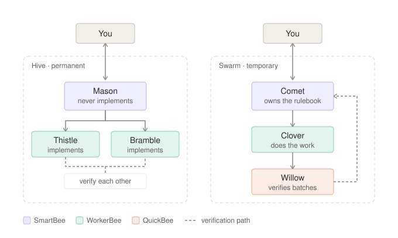

Two ready-to-import multi-agent teams for Buzz: a standing Hive for ongoing engineering, and a disposable Swarm for migrations and other bounded, repetitive work.
SmartBee · coordinatesWorkerBee · buildsQuickBee · verifies

Block's Effective teams of
agents describes two shapes for teams of AI agents. This repository is a working
implementation of both, as importable buzz-team-snapshot files, plus the system
prompts, loadable skills, and a benchmark for telling whether a team is actually working.
The prompts are written against Block's own reference orchestrator and worker personas in harbor-buzz-orchestra, not invented from the blog post alone.
The test: can you enumerate the work before you start?
| Hive | Swarm | |
|---|---|---|
| Lifespan | Permanent | Ends when the work list is empty |
| Memory is about | You: preferences, prior decisions | The project: an edge-case rulebook |
| Topology | Flat; you address each agent directly | One coordinator, a worker pool, a verifier |
| Good for | Features, bugs, review, “why is X slow” | Upgrades, migrations, codemods, coverage sweeps |
Below both: a task that finishes in minutes belongs to a single agent. Teams lose to solo agents on short work. The article's +33% figure applies to long-horizon work only.
Import straight into Buzz Desktop. One placeholder to fill in.
Verification recipe, review checklist, and migration templates as SKILL.md bundles.
A zero-dependency migration task with seven traps. A mechanical find-and-replace fails 13 of 17 tests.
What actually breaks in Buzz, each claim linked to the source file that establishes it.
Mapped against LangChain's four multi-agent patterns:
| Pattern | Here |
|---|---|
| Subagents: central orchestration | The Swarm (close match) |
| Skills: progressive disclosure | Shipped as loadable SKILL.md bundles |
| Router: classify and dispatch | The Hive, with you as the router. Deliberate. |
| Handoffs: state-driven transitions | Not built. Buzz has no state machine to enforce it, and a prompt-simulated pipeline dies silently on one forgotten mention. |
An early version of the Swarm coordinator's prompt said: “do one unit of the work yourself, then write down the pattern.” Reasonable-sounding, and it has no stopping condition. The coordinator did the entire migration alone; its two workers were never triggered once. Agent logs showed zero sessions for both.
Block's reference persona opens with the guard that was missing: “You do not run commands yourself; your workers do.” It repeats it a paragraph later. In a prompt that is otherwise terse, saying it twice is not an accident.
That, and two other corrections found by checking against Buzz's own source rather than trusting a plausible assumption, are written up in the protocol notes.
git clone https://github.com/SohrabZ/buzz-agent-teams.git
cd buzz-agent-teams
sed -i '' 's/OWNER/YourName/g' teams/*.team.jsonThen in Buzz Desktop: Agents → Agent teams → + and import each
.team.json. Full walkthrough in the
setup guide.